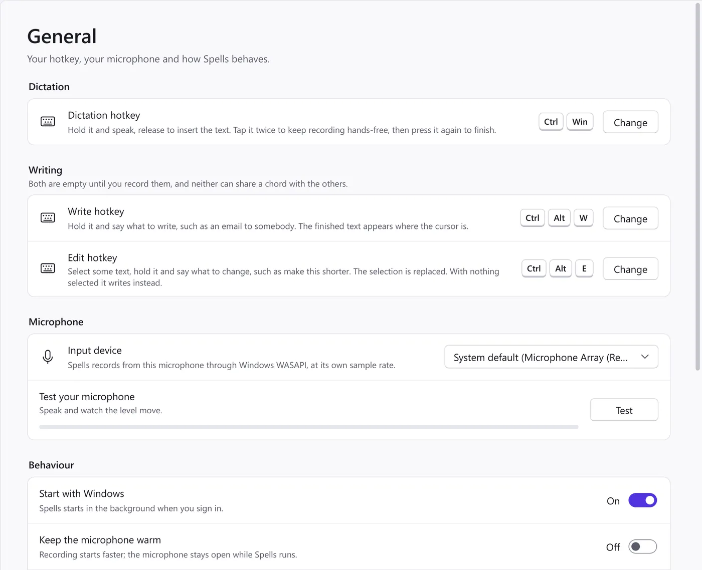
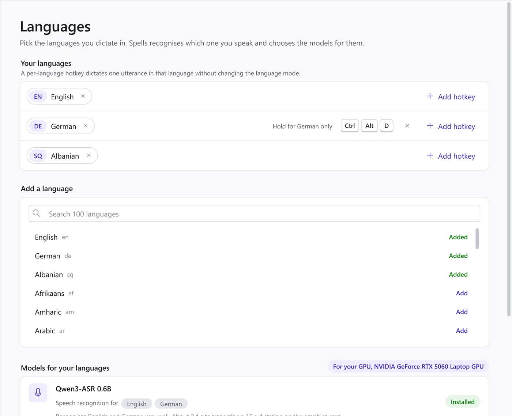
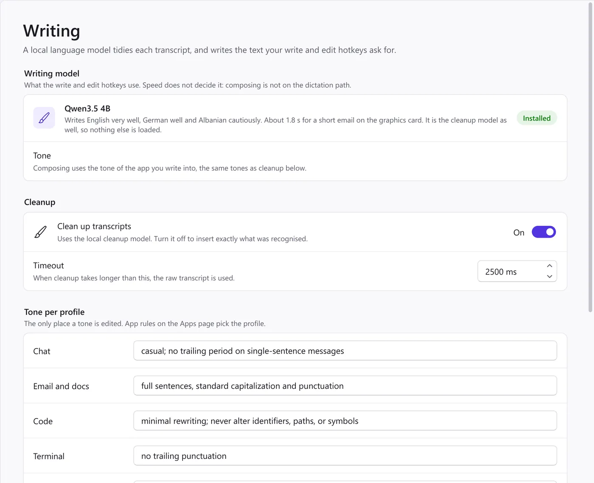
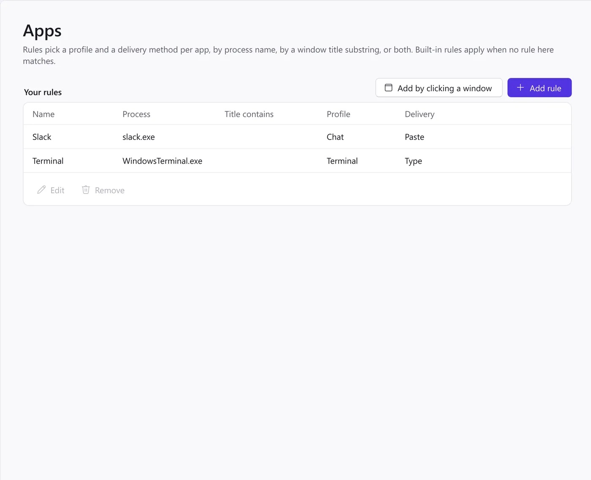
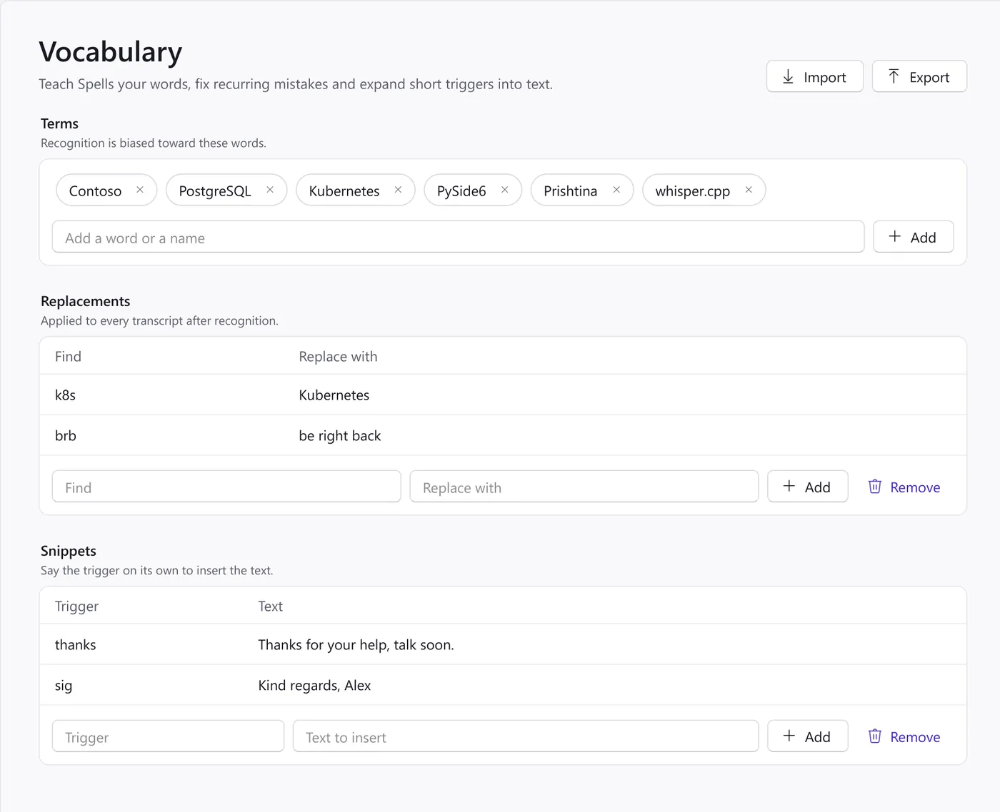
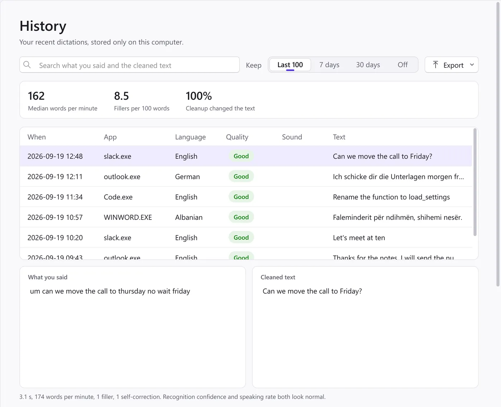

Spells is free, offline voice typing for Windows 11. Hold a hotkey, speak English, German or Albanian, and let go: clean text appears at the cursor in whatever app has focus. Speech to text and cleanup run on local AI models on your own PC, which makes it a private alternative to Wispr Flow.
Free and open source. No account, no subscription.
Chat with Sam
Are we still on for Thursday?
CanwemovethecalltoFriday?
An
Lena
Betreff
Unterlagen
Shënime
CtrlWinEnglish, in a chat app. You said um can we move the call to thursday no wait friday. Spells wrote the line above.
10:24
Hold, speak, let go.
CtrlWin
1Hold the hotkey
Click where the text should go and hold Ctrl + Win. You can record any other chord in Settings.
2Speak
The pill at the bottom of the screen shows that Spells is listening. It never takes the focus away from your window.
See you at ten.
3Let go
Spells tidies the transcript and puts the text at the cursor. It is told to keep names, places, numbers and dates exactly as you said them.
Tap the hotkey twice to keep recording hands-free, then press it once more to finish. Esc cancels. A dictation can run for ten minutes, and the pill tells you when one minute is left.
What the pill tells you
Listening. The bars follow your voice.
Hands-free. You tapped the hotkey twice. Press it again to finish.
Listening while busy. The previous dictation is still being processed. You do not have to wait for it.
Processing
Processing. Your speech is becoming text.
Writing 7s: make this shorter
Writing. The writing model is working on your request, with the seconds counting. Esc cancels it.
Copied
Copied. The focus moved to another window while Spells was working, so the text went to the clipboard instead. Press Ctrl+V to paste it.
Starting engines
Starting engines. The speech engine is still loading, for example just after Spells starts. Your dictation waits for it.
Mic is busy
A problem, in plain words. For example a microphone another app is holding.
More than a transcript
Spells removes the ums and the false starts, types while you talk, and writes for you when you ask it to. All of it on your own PC.
Write by voice
Hold the write hotkey and say what you want written. What you said is the instruction and is never inserted itself.
You sayWrite a short note to Sam asking to move our call to Friday.
Writing 3s: Write a short note to Sam asking to move our call to Friday.
At the cursorHi Sam, could we move our call to Friday? Let me know what time works for you. Thanks!
Edit by voice
Select some text, hold the edit hotkey and say what to change. The selection is replaced, and your clipboard is put back exactly as it was.
SelectedI wanted to reach out to let you know that unfortunately I will not be able to attend the meeting on Thursday afternoon.
You sayMake this shorter.
Replaced withI can't make Thursday afternoon's meeting.
Both hotkeys stay empty until you record them. The writing model is Qwen3.5 4B on a PC with a graphics card and Gemma 4 E2B otherwise. On the processor a short email takes several seconds, and the pill counts them.
Spells settings
Spells






Screenshots of Spells with sample data.
Hotkeys and live typing
One hotkey to dictate, and optional write and edit hotkeys beside it.
With Type the words while I speak on, a draft appears in the field as you talk and corrects itself; the finished text replaces it when you let go. It runs where the speech model keeps up on your hardware: with a graphics card, or with Qwen3-ASR on the processor.
The draft stays out of code editors and terminals unless you allow it there, and it never touches your clipboard.
Start with Windows, keep the microphone warm for a faster start, and short start and stop sounds.
Models picked for your languages and your PC
Tick the languages you dictate in. Spells recognises which one you are speaking.
It chooses the speech and writing models for those languages and your hardware, and says in plain words how well each does and how fast it is.
A per-language hotkey dictates one utterance in that language without changing the mode.
With graphics built into the processor, Spells measures once whether the graphics or the processor is faster, and uses the faster one.
Cleanup with a tone for each kind of app
A local language model removes fillers and self-corrections and fixes the punctuation.
Each profile has a tone: casual in chat, full sentences in email and documents, minimal rewriting in code.
If cleanup takes longer than the timeout, or its answer fails a check, you get the raw transcript instead. Your words are never lost to a bad rewrite.
Switch cleanup off to insert exactly what was recognised.
Profiles per app
Built-in rules know common chat apps, mail and Word, code editors and terminals, by process name or window title.
Add your own rule by clicking a running window.
Each rule picks a profile and a delivery method: paste, or type the text key by key where pasting is unwelcome, as in a terminal.
Your own words
Terms: names, products and jargon that recognition should lean towards.
Replacements: fix a recurring mistake after every transcript.
Snippets: say a short trigger on its own and a longer text is inserted.
Import and export the lot as a file.
A history that stays on your PC
Search what you said and what was written, side by side, with a quality badge for each dictation.
Your median words per minute, fillers per 100 words, and how often cleanup changed the text.
Keep the last 100, 7 days, 30 days or nothing. Export as JSON, CSV or Markdown.
Recordings are not kept unless you switch that on.
Your voice stays on your PC.
Spells is private dictation: it does all of its work on your computer. This is exactly what that means.
Your PC
Microphone
Spells
Speech engine127.0.0.1
Cleanup engine127.0.0.1
Text at your cursor
The internet
Nothing, until you press Check for updates or switch on the weekly check. Then one small version file.
Processed where you are. Speech and text are processed on your PC and never sent anywhere.
Engines on loopback. The speech and cleanup engines listen only on 127.0.0.1, the loopback address, so nothing outside your PC can reach them.
Nothing counted. There is no telemetry, no analytics, no crash reporting and no account.
One connection, and only when you ask. The only code that opens an internet connection is the update check. It is off by default, runs only when you press the button on the About page or switch on the weekly check, and fetches a small version file.
Models checked once. The online installer downloads the model files once, at install time, and checks each one against a pinned SHA-256 hash. The offline installer needs no network at all.
Unplug it. You can dictate with the network cable unplugged.
English and German are excellent. Albanian works, with more mistakes.
Spells chooses a speech model per language and runs it locally with whisper.cpp or llama.cpp. Here is how English, German and Albanian dictation does today, measured on the project's own test clips.
English
Excellent
Recognised by Qwen3-ASR. Cleanup removes fillers and self-corrections and keeps your meaning. On a desktop processor the text arrives about 1.2 s after you let go, and the draft appears while you speak.
Deutsch
Excellent
German. Also recognised by Qwen3-ASR, a little behind English. Cleanup is excellent here too, and the timing is about the same: around 1.2 s on the processor, with the draft while you speak.
Shqip
Usable, weaker
Albanian. Recognised by Whisper large-v3 turbo, which makes noticeably more mistakes here than in English or German. Cleanup is careful: in testing it never changed the meaning, but it often leaves Albanian fillers and self-corrections in. On the processor alone a 15-second dictation takes about 4.5 s and appears when you let go; a graphics card is quicker. Albanian on the fast speech model is planned.
Word error rate on the test clips: English 7.9%, German 12%, Albanian about 50%. The figures are provisional until the benchmark runs again. Whisper knows about 100 languages in all, and the Languages page lets you add any of them. The others are not measured, and cleanup does not run for them.
Download
Every release comes as two installers of the same app. Both let you install for yourself only, with no administrator rights, or for everyone on the PC, which asks for administrator rights once.
Online installer
About 100 MB. The right choice for most people.
It asks which languages you dictate in, looks at your PC, and downloads only the models those languages and that hardware need. Each file is checked against a pinned SHA-256 hash. With a graphics card it fetches the better writing model, Qwen3.5 4B.
About 4.5 GB, in several parts. For a PC without a network.
Everything is inside and nothing is downloaded, at install time or later. GitHub limits a file to 2 GiB, so the installer comes as a Setup.exe plus .bin parts. Download every part into the same folder, then run the .exe. It carries the models that work on any PC, including Gemma 4 E2B as the writing model.
None for an install for yourself. An install for all users of the PC asks for administrator rights once.
Disk
Up to about 5 GB for the app and its models.
Processor
Enough on its own. On a desktop Core i7-14700K without a graphics card, English and German take about 1.2 s from key release to text. When a transcript has fillers to clean up, cleanup adds about a second.
Graphics card
Optional, and faster. Any card with Vulkan support, from NVIDIA, AMD or Intel, with its normal driver.
Network
Only while the online installer runs, and for the update check if you want one.
Questions
Is Spells really offline?
Yes. Speech recognition and cleanup run on your PC, and the engines listen only on 127.0.0.1, so you can dictate with the network cable unplugged. The only code that opens an internet connection is the update check, which is off by default and fetches a small version file when you ask for it. The online installer downloads the models once, at install time; the offline installer needs no network at all.
Which languages can I dictate in?
English and German, both excellent, and Albanian, which works with more mistakes. Whisper knows about 100 languages in all and you can add others on the Languages page, but they are not measured and cleanup does not run for them.
Do I need a graphics card?
No. On a desktop Core i7-14700K without a graphics card, English and German take about 1.2 s from key release to text. A graphics card with Vulkan support, from NVIDIA, AMD or Intel, makes it faster.
Is Spells free?
Yes. Spells is free software under GPL-3.0-or-later, with no account and no subscription. The speech and writing models it uses are released under the MIT and Apache-2.0 licences.
Why does Windows warn me about the installer?
The installer is not code-signed yet, so Windows SmartScreen does not recognise it. Select More info, then Run anyway. A signed installer is planned.
How is Spells different from Wispr Flow?
It does the same kind of job, dictation with cleanup into any app, but everything runs on your own PC: your speech and text are never sent anywhere, and there is no account or subscription. It runs on Windows 11 only, and its languages today are English, German and Albanian.
Good to know
Hotkeys
Hold Ctrl + Win to dictate. Tap it twice for hands-free, press it again to finish, and Esc cancels. The write and edit hotkeys are empty until you record them on the General page; per-language hotkeys live on the Languages page.
The tray icon
Click it to open Settings. Its menu switches the language between Auto and one of yours, turns cleanup on or off, pauses dictation, retries the last dictation and opens History.
Windows that run as administrator
Windows does not let the hotkey reach Spells while an app running as administrator has the focus. If the focus moves to one while Spells is working, the text goes to the clipboard.
Where things are kept
The app in %LOCALAPPDATA%\Programs\Spells, or in Program Files when installed for all users. Your settings are in %APPDATA%\Spells, and history, logs and any recordings in %LOCALAPPDATA%\Spells. Logs hold no dictated text unless you switch on debug logging.
Updates
Press Check for updates on the About page, or switch on the weekly check. An update downloads the installer, checks it against the hash its release was published with, and installs in one click. It never downloads the models again.
Uninstalling
Remove Spells from Installed apps in Windows Settings. It asks whether to remove your settings, history and logs as well; they stay unless you tick the box.
Open source, on the shoulders of open models
Spells is free software under the GNU General Public License, version 3 or later. The code and the build scripts are on GitHub. It stands on these projects: